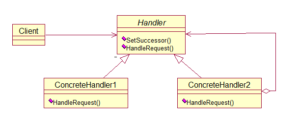
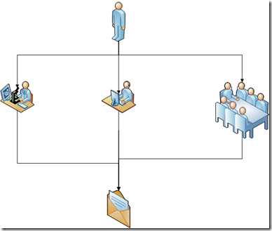
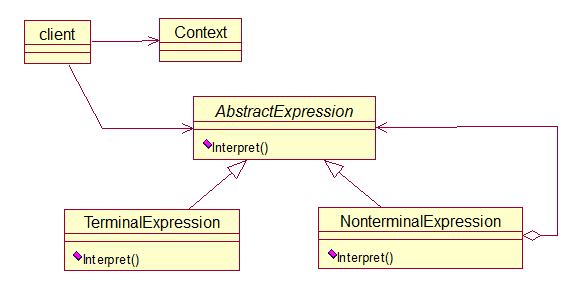
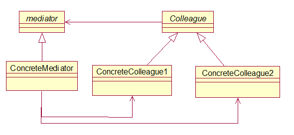
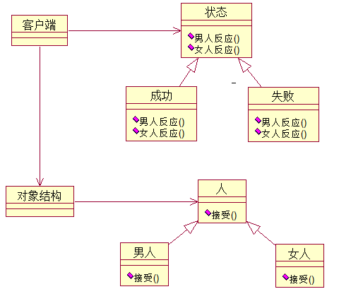

行为型模式：
使多个对象都有机会处理请求,从而避免请求的发送者和接收者之间的耦合关系.将这个对象连成一条链,并沿着这条链传递该请求,直到有一个对象处理它为止.
优点:
当客户提交一个请求时,请求是沿链传递直至有一个ConcreteHandler对象负责处理它.
接收者和发送者都没有对方的明确信息,且链中的对象自己也并不知道链的结构.结果是职责链可简化对象的相互连接,它们仅需保持一个指向其后继者的引用,而不需要保持它所有的候选接收者的引用.
在客户端可以随时地增加或修改处理一个请求的结构,增强了给对象指派职责的灵活性.
职责链模式结构图:

没有职责链模式：如图

这样的话我需要自己和公司的每一个层级都发生耦合关系。
课本实例：申请加薪
代码如下：
//申请
class Request
{
//申请类别
private string requestType;
public string RequestType
{
get { return requestType; }
set { requestType = value; }
}
//申请内容
private string requestContent;
public string RequestContent
{
get { return requestContent; }
set { requestContent = value; }
}
//数量
private int number;
public int Number
{
get { return number ; }
set { number = value; }
}
}
//管理者
abstract class Manager
{
protected string name;
//管理者的上级
protected Manager superior;
public Manager(string name)
{
this.name = name;
}
//设置管理者的上级
public void SetSuperior(Manager superior)
{
this.superior = superior;
}
//申请请求
abstract public void RequestApplications(Request request);
}
//经理
class CommonManager : Manager
{
public CommonManager(string name)
: base(name)
{ }
public override void RequestApplications(Request request)
{
if (request.RequestType == "请假" && request.Number <= 2)
{
Console.WriteLine("{0}：{1}数量{2}被批准", name, request.RequestContent, request.Number);
}
else
{
if (superior != null)
superior.RequestApplications(request);
}
}
}
//总监
class Majordomo : Manager
{
public Majordomo(string name)
: base(name)
{ }
public override void RequestApplications(Request request)
{
if (request.RequestType == "请假" && request.Number <= 5)
{
Console.WriteLine("{0}:{1}数量{2}被批准", name, request.RequestContent, request.Number);
}
else
{
if (superior != null)
superior.RequestApplications(request);
}
}
}
//总经理
class GeneralManager : Manager
{
public GeneralManager(string name)
: base(name)
{ }
public override void RequestApplications(Request request)
{
if (request.RequestType == "请假")
{
Console.WriteLine("{0}:{1}数量{2}被批准", name, request.RequestContent, request.Number);
}
else if (request.RequestType == "加薪" && request.Number <= 500)
{
Console.WriteLine("{0}:{1}数量{2}被批准", name, request.RequestContent, request.Number);
}
else if(request .RequestType =="加薪" && request .Number >500)
{
Console.WriteLine ("{0}：{1}数量{2}再说吧",name ,request.RequestContent ,request.Number );
}
}
给定一个语言，定义它的文法的一种表示，并定义一个解释器，这个解释器使用该表示来解释语言中的句子。
如果一个特定类型的问题发生的频率足够高，那么可能就值得将该问题的各个实例表述为一个简单语言中的句子。这样就可以构建一个解释器，该解释器通过解释这些句子来解决问题
当有一个语言需要解释执行，并且你可将该语言中的句子表示为一个抽象语法树时，可使用解释器模式
优点：
很容易地改变和扩展文法，因为该模式使用类来表示文法规则，你可使用继承来改变和扩展该文法。也比较容易实现文法，因为定义抽象语法树中各个节点的类的实现大体类似，这些类都易于直接编写。
缺点：
解释器模式为文法中的每一条规则至少定义了一个类，因此包含许多规则的文法可能难以管理和维护。建议当文法非常复杂时，使用其他的技术如语法分析程序或编译器生成器来处理。
解释器模式结构图：

用一个中介对象来封装一系列的对象交互。中介者使个对象不需要显式的相互引用，从而使其耦合松散，而且可以独立的改变它们之间的交互
优点：
中介者的出现减少了各个colleague的耦合，使得可以独立地改变和复用各个colleague类和中介者。
由于把对象如何协作进行了抽象，将中介者作为一个独立的概念并将其封装在一个对象中，这样关注的对象就从对象各自本身的行为转移到它们之间的交互上来，也就是站在一个更宏观的角度上看待系统。
缺点：
由于具体中介者控制了集中化，于是就把交互复杂性变为了中介者的复杂性。
中介者模式一般应用于一组对象以定义良好但是复杂的方式进行通信的场合，以及想定制一个分布在多个类中的行为，而又不想生成太多的子类的场合。
中介者模式结构图：

课本实例：美国和伊拉克
代码如下：
//联合国机构
abstract class UnitedNations
{
public abstract void Declare(string message, Country colleague);
}
//联合国安全理事会
class UnitedNationsSecurityCouncil : UnitedNations
{
private USA colleague1;
//定义一个美国类型的对象
private Iraq colleague2;
//美国
public USA Colleague1
{ set { colleague1 = value; } }
//伊拉克
public Iraq Colleague2
{ set { colleague2 = value; } }
//联合国安理会了解所有的国家，所以拥有美国和伊拉克的对象属性
//声明 通讯
public override void Declare(string message, Country colleague)
{
if (colleague ==colleague1)
{
colleague2.GetMessage(message);
}
else
{
colleague1.GetMessage(message);
}
}
}
//国家
abstract class Country
{
protected UnitedNations mediator;
public Country(UnitedNations mediator)
{
this.mediator = mediator;
}
}
//国家产生的时候同时产生中介者,实例化一个国家实例化出一个联合国
//美国
class USA : Country
{
public USA(UnitedNations mediator)
: base(mediator)
{ }
//声明
public void Declare(string message)
{
mediator.Declare(message, this);
}
//获得消息
public void GetMessage(string message)
{
Console.WriteLine("美国获得对方消息：" + message);
}
}
//伊拉克
class Iraq : Country
{
public Iraq(UnitedNations mediator)
: base(mediator)
{ }
//声明
public void Declare(string message)
{
mediator.Declare(message, this);
}
//获得消息
public void GetMessage(string message)
{
Console.WriteLine("伊拉克获得对方消息：" + message);
}
}
表示一个作用于某对象结构中的各元素的操作.它使你可以在不改变各元素的类的前提下定义作用于这些元素的新操作.
对象结构类 由于总是需要"男人","女人"在不同状态的对比,所以我们需要一个"对象结构"类来针对不同"状态"遍历"男人"与"女人",得到不同的反应.
它把数据结构和作用于结构上的操作之间的耦合解脱开,使得操作集合可以相对自由地演化.访问者模式的目的是要把处理从数据结构分离出来.
有比较稳定的数据结构,又有易于变化的算法的话,使用访问者模式就是比较适合的,因为访问者模式使得算法操作的增加变得容易.
优点:
增加新的操作很容易,因为增加新的操作就意味着增加一个新的访问者.访问者模式将有关的行为集中到一个访问者对象中(状态-成功,失败,恋爱)
缺点:
增加新的数据结构变得困难.(人-男人,女人)
访问者模式结构图：

课本实例：男人女人成功失败的状态
代码如下：
//状态的抽象类和人的抽象类
abstract class Action
{
//得到男人结论或反应
public abstract void GetManConclusion(Man concreteElementA);
//得到女人结论或反应
public abstract void GetWomanConclusion(Woman concreteElementA);
}
abstract class Person
{
public abstract void Accept(Action visitor);
}
//成功
class Success : Action
{
public override void GetManConclusion(Man concreteElementA)
{
Console.WriteLine("{0}{1}时，背后多半有一个伟大的女人", concreteElementA.GetType().Name, this.GetType().Name);
}
public override void GetWomanConclusion(Woman concreteElementB)
{
Console.WriteLine("{0}{1}时，背后大多有一个不成功的男人",concreteElementB.GetType().Name, this.GetType().Name);
}
}
//失败
class Failing : Action
{
public override void GetManConclusion(Man concreteElementA)
{
Console.WriteLine("{0}{1}时，闷头喝酒，谁也不用劝", concreteElementA.GetType().Name, this.GetType().Name);
}
public override void GetWomanConclusion(Woman concreteElementB)
{
Console.WriteLine("{0}{1}时，眼泪汪汪，谁也劝不动", concreteElementB.GetType().Name, this.GetType().Name);
}
}
//男人类和女人类
class Man : Person
{
public override void Accept(Action visitor)
{
visitor.GetManConclusion(this);
}
}
class Woman : Person
{
public override void Accept(Action visitor)
{
visitor.GetWomanConclusion(this);
}
}
//对象结构
class ObjectStructure
{
private IList<Person> elements = new List<Person>();
//增加
public void Attach(Person element)
{
elements.Add(element);
}
//移除
public void Detch(Person element)
{
elements.Remove(element);
}
//查看显示
public void Display(Action visitor)
{
foreach (Person e in elements)
{
e.Accept(visitor);
}
}
}